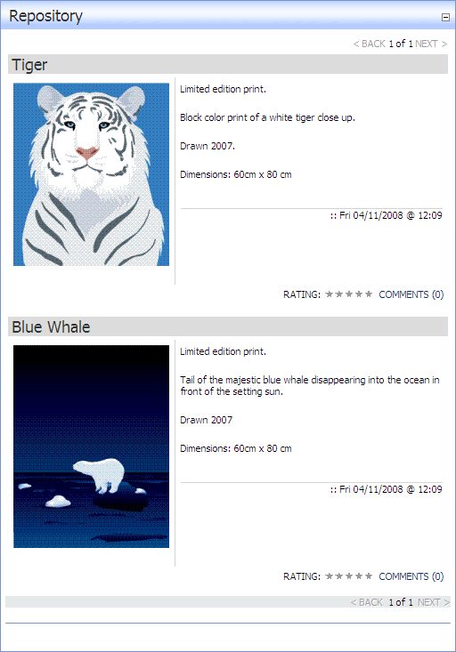

By applying the Portfolio skin, the Repository module can be used to display a portfolio of images. Each listing displays the item title, image, description, and the date and time when the item was last updated. There are no downloads associated with the portfolio.
Ratings and comments are enabled on this skin.

The Portfolio Repository